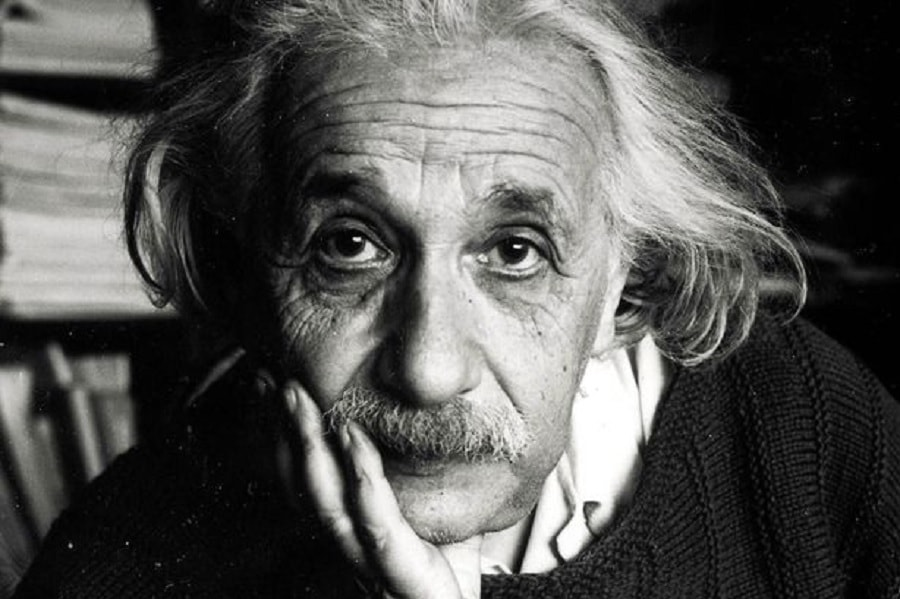
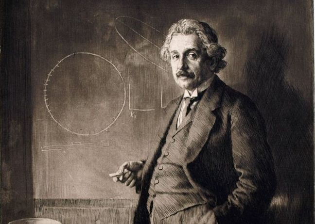
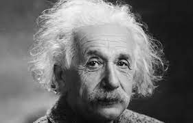
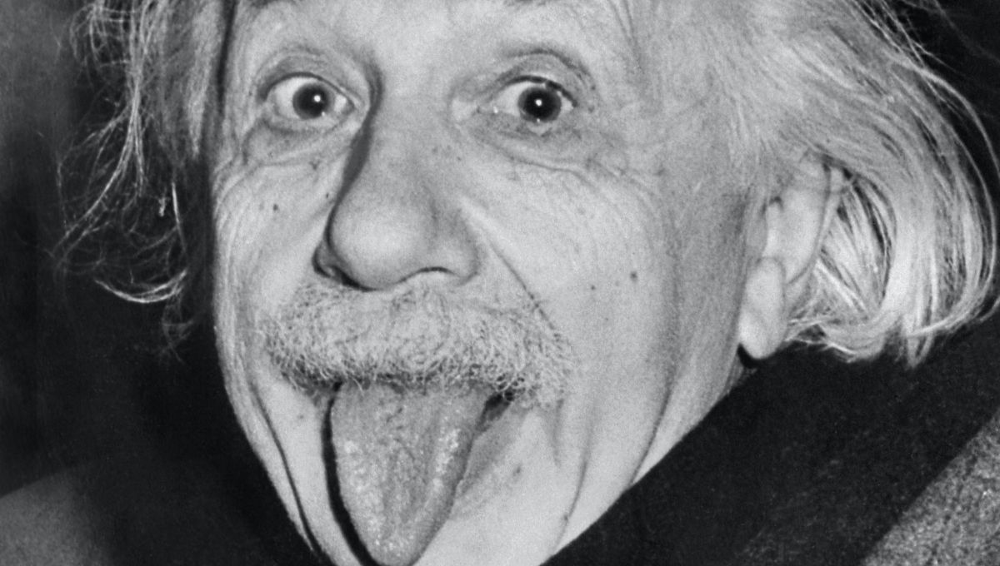

Relativité Restreinte
La relativité restreinte est une théorie physique
développée par Albert Einstein en 1905 pour expliquer les phénomènes observés
dans les systèmes en mouvement. La théorie postule que les lois de la physique
sont les mêmes pour tous les observateurs en mouvement uniforme par rapport à un
référentiel donné, indépendamment de la vitesse de ces observateurs.
La théorie de la relativité restreinte repose sur deux postulats fondamentaux :
La constance de la vitesse de la lumière : la vitesse de la lumière dans le vide
est toujours la même, quelle que soit la vitesse de l'observateur.
Le principe de relativité : toutes les lois physiques ont la même forme pour tous
les observateurs en mouvement uniforme les uns par rapport aux autres.
Ces postulats ont des implications importantes pour la façon dont nous comprenons
le temps, l'espace et le mouvement.
Un des effets les plus connus de la relativité restreinte est la dilatation du temps.
Selon la théorie, les horloges en mouvement ralentissent par rapport à celles qui
sont au repos. Ainsi, deux horloges qui sont initialement synchronisées ne le
seront plus si l'une d'entre elles est mise en mouvement. Ce phénomène est
appelé la dilatation temporelle.
La relativité restreinte implique également une contraction de la longueur dans la
direction du mouvement. Cette contraction est appelée contraction de Lorentz et elle
est proportionnelle à la vitesse de l'objet par rapport à l'observateur.
Enfin, la relativité restreinte implique également l'équivalence entre la masse et
l'énergie. Cette équivalence est exprimée par la célèbre formule E = mc², où E est
l'énergie, m la masse et c la vitesse de la lumière dans le vide.
Ces concepts ont des implications importantes pour de nombreux domaines de la physique,
tels que l'électromagnétisme, la mécanique quantique et la cosmologie. La relativité
restreinte est donc une théorie fondamentale pour notre compréhension de l'univers.
Relativité Générale
La relativité générale est une théorie physique qui décrit
la gravitation comme une courbure de l'espace-temps. Elle a été développée par Albert
Einstein en 1915 et représente une évolution de sa théorie de la relativité restreinte.
La théorie de la relativité générale stipule que la présence de masse et d'énergie déforme
l'espace-temps autour d'elle, créant une courbure qui affecte le mouvement des objets qui
se déplacent dans cette région de l'espace. La gravité, selon cette théorie, est donc la
conséquence de cette déformation de l'espace-temps.
La relativité générale implique également l'existence d'ondes gravitationnelles, qui sont
des perturbations de l'espace-temps causées par des objets massifs en mouvement. Ces ondes
ont été observées directement pour la première fois en 2015.
L'équation de champ d'Einstein est l'équation clé de la relativité générale. Elle décrit
la relation entre la géométrie de l'espace-temps et la distribution de masse et d'énergie
à l'intérieur de cette région. Cette équation est complexe et difficile à résoudre, même
pour des systèmes simples, mais elle a des implications importantes pour la cosmologie et
la physique des trous noirs.
La relativité générale a été confirmée par de nombreuses expériences et observations. Elle
a fourni une base solide pour l'étude de la physique à grande échelle, comme l'étude de la
structure et de l'évolution de l'univers dans son ensemble. Elle a également conduit à de
nouvelles découvertes, comme l'existence de singularités et de trous noirs, ainsi que des
implications intéressantes pour la physique quantique et la théorie de la gravité quantique.
Biographie
Albert Einstein était un physicien théoricien allemand né le 14 mars 1879
à Ulm, en Allemagne. Il est surtout connu pour sa théorie de la relativité restreinte et
générale, ainsi que pour sa célèbre équation E=mc², qui décrit la relation entre la masse et
l'énergie.
Einstein a commencé à étudier la physique à l'âge de 16 ans et a obtenu son doctorat en 1905 à
l'université de Zurich. C'est cette même année qu'il a publié trois articles révolutionnaires
qui ont posé les bases de la physique moderne.
En 1933, Einstein a quitté l'Allemagne en raison de l'arrivée au pouvoir des nazis et a
finalement émigré aux États-Unis, où il a enseigné à l'Institute for Advanced Study de Princeton,
dans le New Jersey. Il y est resté jusqu'à sa mort en 1955.
Einstein a reçu de nombreux prix pour ses contributions à la physique, notamment le prix Nobel
de physique en 1921. Il est considéré comme l'un des plus grands scientifiques de tous les temps
et sa théorie de la relativité a eu un impact immense sur notre compréhension de l'univers.
Citations
- "La créativité, c'est l'intelligence qui s'amuse."
- "La logique vous mènera de A à B. L'imagination vous emmènera partout."
- "Deux choses sont infinies : l'univers et la bêtise humaine ; en ce qui concerne l'univers, je n'en ai pas encore acquis la certitude absolue."
- "La folie, c'est de faire toujours la même chose et de s'attendre à un résultat différent."
- "Je n'ai pas échoué. J'ai simplement trouvé 10 000 solutions qui ne fonctionnent pas."
- "La connaissance s'acquiert par l'expérience, tout le reste n'est que de l'information."
- "Le monde ne sera pas détruit par ceux qui font le mal, mais par ceux qui les regardent sans rien faire."
- "La paix ne peut pas être maintenue par la force, elle ne peut être atteinte que par la compréhension."
- "Tout le monde est un génie. Mais si vous jugez un poisson sur sa capacité à grimper à un arbre, il passera toute sa vie à croire qu'il est stupide."
- "L'imagination est plus importante que le savoir."
Albert Einstein, le génie !
Ses découvertes ont eu un impact durable et significatif sur notre compréhension de l'univers.